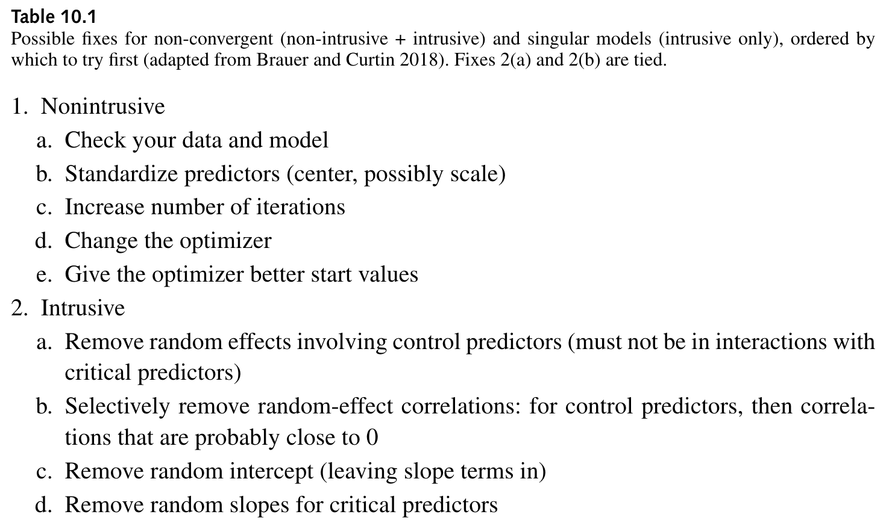
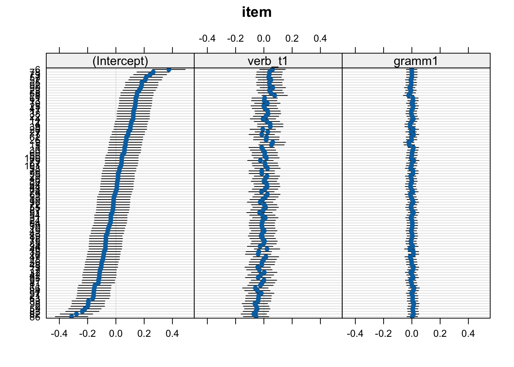
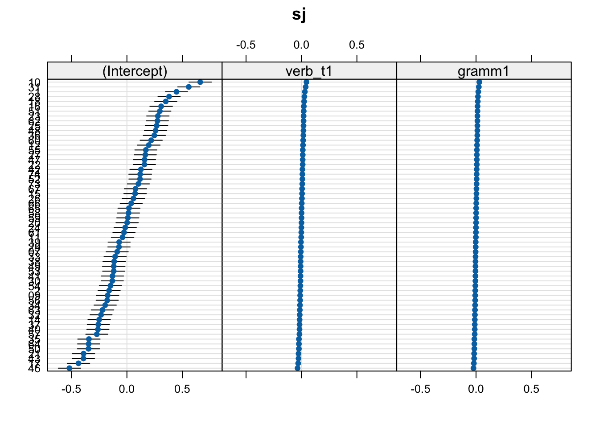
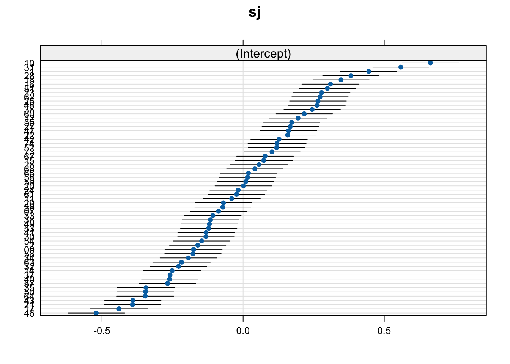
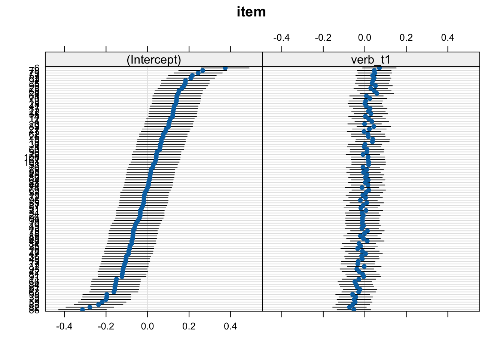

# suppress scientific notation
options(scipen=999)13 Model selection: Example
Parsimonious model selection
Under construction
This chapter is not fully translated from bullet points (from my slides) to prose. This will happen eventually (hopefully by spring 2024).
Learning Objectives
Today we will…
- apply remedies for nonconvergence
- reduce our RES with a data-driven approach
- compare a parsimonious model to maximal and intercept-only models
Resources
Set-up
Code for a function to format p-values
library(broman)
# function to format p-values
format_pval <- function(pval){
dplyr::case_when(
pval < .001 ~ "< .001",
pval < .01 ~ "< .01",
pval < .05 ~ "< .05",
TRUE ~ broman::myround(pval, 3)
)
}Load packages
# load libraries
pacman::p_load(
tidyverse,
here,
janitor,
# new packages for mixed models:
lme4,
lmerTest,
broom.mixed,
lattice)lmer <- lmerTest::lmerLoad data
- data from Biondo et al. (2022)
df_biondo <-
read_csv(here("data", "Biondo.Soilemezidi.Mancini_dataset_ET.csv"),
locale = locale(encoding = "Latin1") ## for special characters in Spanish
) |>
clean_names() |>
mutate(gramm = ifelse(gramm == "0", "ungramm", "gramm")) |>
mutate_if(is.character,as_factor) |> # all character variables as factors
droplevels() |>
filter(adv_type == "Deic")13.0.1 Set contrasts
contrasts(df_biondo$verb_t) <- c(-0.5,+0.5)
contrasts(df_biondo$gramm) <- c(-0.5,+0.5)contrasts(df_biondo$verb_t) [,1]
Past -0.5
Future 0.5contrasts(df_biondo$gramm) [,1]
gramm -0.5
ungramm 0.513.1 Start maximal
- model structure should be decided a priori
- included fixed (predictors and covariates) and random effects
13.1.1 Maximal model
- starting point: most maximal model structure justified by your design
- if this converges, great!
- if it doesn’t, what does this mean and what should we do?
fit_verb_fp_mm <- lmer(log(fp) ~ verb_t*gramm +
(1 + verb_t*gramm|sj) +
(1 + verb_t*gramm|item),
data = df_biondo,
subset = roi == 4)- we get a warning of singular fit
13.2 Convergence issues
- “Convergence is not a metric of model quality” (Sonderegger, 2023, p. 365, Box 10.2)
- convergence does not always indicate “overfitting” or “overparameterisation”
- can also be due to optimizer choice
- since default optimizer was changed to
nloptwrapfrombobyqa, there seem to be more ‘false positive’ convergence warnings
- since default optimizer was changed to
- false-positive convergence: you get a convergence warning, but changing the optimizer and/or iteration count does not produce a warning
- false-negative convergence: you do not get a warning, but your variance-covariance matrix might indicate overfitting
13.2.1 Nonconvergence remedies
- unfortunately there is no one “right” way to deal with convergence issues
- important is to transparently report and justify your method
- Table 17 in Brauer & Curtin (2018) (p. 404) suggests 20 remedies, whittled down to 10 suggestions in Sonderegger (2023)

13.2.2 Intrusive vs. Non-intrusive remedies
non-intrusive remedies amount to checking/adjusting data and model specifications
intrusive remedies involve reducing random effects structure
- there are different schools of thought
- random-intercepts only: increased Type I error rate = overconfident estimates
- maximal-but-singular-fit model (Barr et al., 2013): reduces power = underconfident estimates
- data-driven approach (Bates et al., 2015): can lose the forest for the trees, e.g., removing random slopes for predictors of interest
- there are different schools of thought
each strategy has its drawback
- important is to choose your strategy a priori and transparently report and justify your strategy
- even better: share/publish your data and code, which should be reproducible
13.2.3 ?convergence
- type
?convergencein the Console and read the vignette- what suggestions does it make?
- compare this to
?isSingular
13.3 Non-intrusive methods
- check your data structure/variables
- check model assumptions (e.g., normality, missing transformations of variables)
- check your RES is justified by your experimental design/data structure
- centre your predictors (e.g., sum contrasts, or centring/standardizing) to reduce multicollinearity; reduces collinearity in the random effects (a possible source of nonconvergence)
- check observations per cell (e.g., is there a participant very few observations, or few observations per one condition? Should be at least >5 per cell)
- alter model controls:
- increase iterations
- check optimizer
13.3.1 Check optimzer
- optimizer
lme4::allFit(model)(can take a while to run)
all_fit_verb_fp_mm <- allFit(fit_verb_fp_mm)
# bobyqa : boundary (singular) fit: see help('isSingular')
# [OK]
# Nelder_Mead : [OK]
# nlminbwrap : boundary (singular) fit: see help('isSingular')
# [OK]
# nmkbw : [OK]
# optimx.L-BFGS-B : boundary (singular) fit: see help('isSingular')
# [OK]
# nloptwrap.NLOPT_LN_NELDERMEAD : boundary (singular) fit: see help('isSingular')
# [OK]
# nloptwrap.NLOPT_LN_BOBYQA : boundary (singular) fit: see help('isSingular')
# [OK]
# There were 11 warnings (use warnings() to see them)13.3.2 Optimizers
default optimizer for
lmer()isnloptwrap, formerlybobyqa(Bound Optimization by Quaradric Approximiation)- usually changing to
bobyqahelps
- usually changing to
see
?lmerControlfor more infoif fits are very similar (or all optimizeres except the default), the nonconvergent fit was a false positive
- it’s safe to use the new optimizer
summary(all_fit_verb_fp_mm)$llik bobyqa Nelder_Mead
-2105.109 -2179.479
nlminbwrap nmkbw
-2105.106 -2105.109
optimx.L-BFGS-B nloptwrap.NLOPT_LN_NELDERMEAD
-2105.106 -2105.106
nloptwrap.NLOPT_LN_BOBYQA
-2105.106 summary(all_fit_verb_fp_mm)$fixef (Intercept) verb_t1 gramm1 verb_t1:gramm1
bobyqa 5.956403 0.06170602 0.003369634 -0.01418865
Nelder_Mead 5.956350 0.06188102 0.003488675 -0.01397531
nlminbwrap 5.956403 0.06170726 0.003369637 -0.01419047
nmkbw 5.956404 0.06170653 0.003369153 -0.01419036
optimx.L-BFGS-B 5.956403 0.06170717 0.003369787 -0.01419044
nloptwrap.NLOPT_LN_NELDERMEAD 5.956403 0.06170725 0.003369649 -0.01419046
nloptwrap.NLOPT_LN_BOBYQA 5.956403 0.06170771 0.003369203 -0.0141918413.3.3 Increase iterations
- and/or increase number of iterations
- default is 10 000 (
1e5in scientific notation) - you can try 20 000, 100 000, etc.
- this usually helps with larger data or models with complex RES
- default is 10 000 (
# check n of iterations
fit_verb_fp_mm@optinfo$feval[1] 231813.3.4 lmerControl()
fit_verb_fp_mm <- lmer(log(fp) ~ verb_t*gramm +
(1 + verb_t*gramm|sj) +
(1 + verb_t*gramm|item),
data = df_biondo,
subset = roi == 4,
control = lmerControl(optimizer = "bobyqa",
optCtrl = list(maxfun = 2e5))
)- or you can just ‘update’ the model to save some syntax
fit_verb_fp_mm <- update(fit_verb_fp_mm,
control = lmerControl(optimizer = "bobyqa",
optCtrl = list(maxfun = 2e5)))boundary (singular) fit: see help('isSingular')Warning: Model failed to converge with 1 negative eigenvalue: -5.3e-0113.3.5 Removing parameters
- still won’t converge?
- it’s time to consider intrusive remedies: removing random effects parameters
13.4 Intrusive methods
- nonconvergence in maximal models is often due to overfitting
- i.e., the model is overly complex given your data
- this is typically due to an overly complex random effects structure
- if the non-intrusive methods don’t lead to convergence, the problem is likely overfitting
13.4.1 Parsimonious vs. maximal
- there are different camps on how to deal with this issue
- I personally follow the suggestions in Bates et al. (2015) (for now)
- run random effects Principal Components Analysis (
summary(rePCA(model)),lme4package)- informs by how many parameters our model is overfit
- check variance-covariance matrix (
VarCorr(model)) - remove parameters with very high or low Correlation terms and/or much lower variance compared to other terms
- fit simplified model
- wash, rinse, repeat
- run random effects Principal Components Analysis (
- we’ll practice this method today, but keep in mind that it’s up to you to decide and justify which method you use
13.4.2 Random effects Principal Components Analysis
- gives us a ranking of all parameters (‘components’) in our RES per unit
summary(rePCA(fit_verb_fp_mm))$item
Importance of components:
[,1] [,2] [,3] [,4]
Standard deviation 0.3638 0.2493 0.08366 0.000000000000000001309
Proportion of Variance 0.6567 0.3085 0.03474 0.000000000000000000000
Cumulative Proportion 0.6567 0.9653 1.00000 1.000000000000000000000
$sj
Importance of components:
[,1] [,2] [,3] [,4]
Standard deviation 0.6490 0.01470 0.000001281 0.00000001467
Proportion of Variance 0.9995 0.00051 0.000000000 0.00000000000
Cumulative Proportion 0.9995 1.00000 1.000000000 1.0000000000013.4.2.1
- important is the Cumulative Proportion
- how much of the cumulative variance explained by all the by-unit parameters does this one parameter contribute?
- we see for item, the first component accounts for 66% of the variance explained, and the next contributes an additional 31%, and the next 3%
- so two components account for roughly 97% of variance explained by our RES
- in other words, we can remove one component for sure, and possibly another
- we could potentially remove 3 components from participant
13.4.3 Variance-covariance matrix
- so we can remove 2 parameters from item and participant
- so either the varying intercept, or slope for tense, grammaticality, or their interaction
- we can check this with
VarCorr(fit_verb_fp_mm)
VarCorr(fit_verb_fp_mm) Groups Name Std.Dev. Corr
item (Intercept) 0.139189
verb_t1 0.055890 0.488
gramm1 0.022569 -0.109 -0.921
verb_t1:gramm1 0.095314 -0.283 0.456 -0.646
sj (Intercept) 0.257535
verb_t1 0.018296 0.974
gramm1 0.012055 0.960 0.872
verb_t1:gramm1 0.017731 0.991 0.934 0.990
Residual 0.399095 - for item I would remove
grammbecause it has the lowest variance, and has a pretty high correlation withverb_t(which is unlikely to be true) - I would also remove
grammfor participant for the same reason, as well as its high correlation with the intercept andverb_t
13.4.3.1 Alternate model 1
- for now let’s just remove the interaction term
- for reproducibility reasons, do not delete the code for a model that did not converge
- rather, write a comment on what decision was made (and why) for the new model
fit_verb_fp_m1 <- lmer(log(fp) ~ verb_t*gramm +
(1 + verb_t+gramm|sj) +
(1 + verb_t+gramm|item),
data = df_biondo,
subset = roi == 4,
control = lmerControl(optimizer = "bobyqa",
optCtrl = list(maxfun = 2e5))
)boundary (singular) fit: see help('isSingular')13.4.3.1.1 rePCA()
summary(rePCA(fit_verb_fp_m1))$item
Importance of components:
[,1] [,2] [,3]
Standard deviation 0.3559 0.1291 0.00000007181
Proportion of Variance 0.8837 0.1163 0.00000000000
Cumulative Proportion 0.8837 1.0000 1.00000000000
$sj
Importance of components:
[,1] [,2] [,3]
Standard deviation 0.6465 0.0000006824 0
Proportion of Variance 1.0000 0.0000000000 0
Cumulative Proportion 1.0000 1.0000000000 113.4.3.1.2 VarCorr()
VarCorr(fit_verb_fp_m1) Groups Name Std.Dev. Corr
item (Intercept) 0.139274
verb_t1 0.055550 0.489
gramm1 0.020747 -0.117 -0.924
sj (Intercept) 0.257657
verb_t1 0.017584 1.000
gramm1 0.011554 1.000 1.000
Residual 0.399869 - when we see Corr +/-1, this tells us there was an error computing correlations between parameters
- it is an invitation to explore
- this is not plausible, and indicates overfitting in our model
- we can remove all slopes from sj
13.4.3.1.3 by-item random effects
lattice::dotplot(ranef(fit_verb_fp_m1))$item
13.4.3.1.4 by-participant random effects (with +1 correlations)
lattice::dotplot(ranef(fit_verb_fp_m1))$sj
13.4.3.2 Alternate model 2
fit_verb_fp_m2 <- lmer(log(fp) ~ verb_t*gramm +
(1 |sj) +
(1 + verb_t+gramm|item),
data = df_biondo,
subset = roi == 4,
control = lmerControl(optimizer = "bobyqa",
optCtrl = list(maxfun = 2e5))
)boundary (singular) fit: see help('isSingular')13.4.3.2.1 rePCA()
summary(rePCA(fit_verb_fp_m2))$item
Importance of components:
[,1] [,2] [,3]
Standard deviation 0.3559 0.1297 0.00000001647
Proportion of Variance 0.8827 0.1173 0.00000000000
Cumulative Proportion 0.8827 1.0000 1.00000000000
$sj
Importance of components:
[,1]
Standard deviation 0.6441
Proportion of Variance 1.0000
Cumulative Proportion 1.000013.4.3.2.2 VarCorr()
VarCorr(fit_verb_fp_m2) Groups Name Std.Dev. Corr
item (Intercept) 0.139364
verb_t1 0.055805 0.485
gramm1 0.020546 -0.097 -0.917
sj (Intercept) 0.257648
Residual 0.399995 - by-item slopes for
grammandverb_tare highly correlated grammhas least variance, so let’s remove it
13.4.3.2.3 by-item random effects
lattice::dotplot(ranef(fit_verb_fp_m2))$item13.4.3.3 Alternate model 3
fit_verb_fp_m3 <- lmer(log(fp) ~ verb_t*gramm +
(1 |sj) +
(1 + verb_t|item),
data = df_biondo,
subset = roi == 4,
control = lmerControl(optimizer = "bobyqa",
optCtrl = list(maxfun = 2e5))
)- converged!
13.4.3.3.1 rePCA()
summary(rePCA(fit_verb_fp_m3))$item
Importance of components:
[,1] [,2]
Standard deviation 0.3553 0.10311
Proportion of Variance 0.9223 0.07768
Cumulative Proportion 0.9223 1.00000
$sj
Importance of components:
[,1]
Standard deviation 0.6438
Proportion of Variance 1.0000
Cumulative Proportion 1.000013.4.3.3.2 VarCorr()
VarCorr(fit_verb_fp_m3) Groups Name Std.Dev. Corr
item (Intercept) 0.139365
verb_t1 0.050134 0.542
sj (Intercept) 0.257714
Residual 0.400315 13.4.3.4 Alternate model 4
- but we might’ve also decided to remove
verb_t, so let’s run that model
fit_verb_fp_m4 <- lmer(log(fp) ~ verb_t*gramm +
(1 |sj) +
(1 + gramm|item),
data = df_biondo,
subset = roi == 4,
control = lmerControl(optimizer = "bobyqa",
optCtrl = list(maxfun = 2e5))
)boundary (singular) fit: see help('isSingular')- does not converge, so we’re justified in keeping by-item
verb_tslopes
13.4.4 Final model
- the final model name should be some sort of convention to make your life easier
- so remove model index
fit_verb_fp <- fit_verb_fp_m313.4.4.0.1 by-item random effects
lattice::dotplot(ranef(fit_verb_fp))$sj
13.4.4.0.2 by-participant random effects
lattice::dotplot(ranef(fit_verb_fp))$item
13.4.4.0.3 summary()
summary(fit_verb_fp)Linear mixed model fit by REML. t-tests use Satterthwaite's method [
lmerModLmerTest]
Formula: log(fp) ~ verb_t * gramm + (1 | sj) + (1 + verb_t | item)
Data: df_biondo
Control: lmerControl(optimizer = "bobyqa", optCtrl = list(maxfun = 200000))
Subset: roi == 4
REML criterion at convergence: 4216.2
Scaled residuals:
Min 1Q Median 3Q Max
-4.1758 -0.6096 -0.0227 0.6060 4.0568
Random effects:
Groups Name Variance Std.Dev. Corr
item (Intercept) 0.019423 0.13936
verb_t1 0.002513 0.05013 0.54
sj (Intercept) 0.066417 0.25771
Residual 0.160252 0.40032
Number of obs: 3795, groups: item, 96; sj, 60
Fixed effects:
Estimate Std. Error df t value Pr(>|t|)
(Intercept) 5.956384 0.036763 79.243172 162.021 < 0.0000000000000002
verb_t1 0.061733 0.013971 93.410519 4.419 0.0000267
gramm1 0.003298 0.012999 3544.451690 0.254 0.80
verb_t1:gramm1 -0.014380 0.025998 3544.762213 -0.553 0.58
(Intercept) ***
verb_t1 ***
gramm1
verb_t1:gramm1
---
Signif. codes: 0 '***' 0.001 '**' 0.01 '*' 0.05 '.' 0.1 ' ' 1
Correlation of Fixed Effects:
(Intr) vrb_t1 gramm1
verb_t1 0.077
gramm1 0.000 -0.002
vrb_t1:grm1 0.000 0.002 0.000- IMPORTANTLY, only look at the fixed effects after you’ve got your final model!!!!
- i.e., run model -> convergence error ->
rePCA()+VarCorr()-> run model -> … -> converges -> only NOW runsummary(model)
- i.e., run model -> convergence error ->
13.5 Comparing to ‘bad’ models
- let’s compare our final model to our ‘bad’ models
- random intercepts-only model (overconfident)
- maximal model (underconfident)
13.5.1 Random-intercepts only
fit_verb_fp_intercepts <- lmer(log(fp) ~ verb_t*gramm +
(1 |sj) +
(1 |item),
data = df_biondo,
subset = roi == 4
)- converges
Code
sum_fit_verb_fp <-
tidy(fit_verb_fp,
effects = "fixed") |>
as_tibble() |>
mutate(p_value = format_pval(p.value),
model = "parsimonious")
sum_fit_verb_fp_mm <-
tidy(fit_verb_fp_mm,
effects = "fixed") |>
as_tibble() |>
mutate(p_value = format_pval(p.value),
model = "maximal")
sum_fit_verb_fp_intercepts <-
tidy(fit_verb_fp_intercepts,
effects = "fixed") |>
as_tibble() |>
mutate(p_value = format_pval(p.value),
model = "intercepts")13.5.2 coefficient estimates
Code
rbind(sum_fit_verb_fp, sum_fit_verb_fp_intercepts, sum_fit_verb_fp_mm) |>
select(term, estimate, model) |>
mutate(estimate = round(estimate,4)) |>
pivot_wider(
id_cols = c(term),
names_from = model,
values_from = estimate
) |>
mutate(measure = "estimate") |>
kable() |>
kable_styling()| term | parsimonious | intercepts | maximal | measure |
|---|---|---|---|---|
| (Intercept) | 5.9564 | 5.9564 | 5.9564 | estimate |
| verb_t1 | 0.0617 | 0.0619 | 0.0617 | estimate |
| gramm1 | 0.0033 | 0.0032 | 0.0034 | estimate |
| verb_t1:gramm1 | -0.0144 | -0.0143 | -0.0142 | estimate |
13.5.3 standard error
Code
rbind(sum_fit_verb_fp, sum_fit_verb_fp_intercepts, sum_fit_verb_fp_mm) |>
select(term, std.error, model) |>
mutate(std.error = round(std.error,4)) |>
pivot_wider(
id_cols = c(term),
names_from = model,
values_from = std.error
) |>
mutate(measure = "std.error") |>
kable() |>
kable_styling()| term | parsimonious | intercepts | maximal | measure |
|---|---|---|---|---|
| (Intercept) | 0.0368 | 0.0368 | 0.0367 | std.error |
| verb_t1 | 0.0140 | 0.0130 | 0.0144 | std.error |
| gramm1 | 0.0130 | 0.0130 | 0.0133 | std.error |
| verb_t1:gramm1 | 0.0260 | 0.0260 | 0.0278 | std.error |
- standard error (\\(SE = \frac{\sigma}{\sqrt{n}}\\\)) is a measure of uncertainty
- larger values reflect greater uncertainty
- because \(n\) is in the denominator, SE gets smaller with more observations
- compared to our parsimonious model with by-item varying
verb_tslopes:- smaller SE for our overconfident (intercepts) model
- larger SE for our underconfident (maximal) model
- but only for the estimate also included in the random effects
13.5.4 t-values
Code
rbind(sum_fit_verb_fp, sum_fit_verb_fp_intercepts, sum_fit_verb_fp_mm) |>
select(term, statistic, model) |>
mutate(statistic = round(statistic,4)) |>
pivot_wider(
id_cols = c(term),
names_from = model,
values_from = statistic
) |>
mutate(measure = "statistic") |>
kable() |>
kable_styling()| term | parsimonious | intercepts | maximal | measure |
|---|---|---|---|---|
| (Intercept) | 162.0213 | 161.9025 | 162.1605 | statistic |
| verb_t1 | 4.4188 | 4.7517 | 4.2982 | statistic |
| gramm1 | 0.2537 | 0.2466 | 0.2542 | statistic |
| verb_t1:gramm1 | -0.5531 | -0.5496 | -0.5108 | statistic |
- t-value (\\(t = \frac{\bar{x}_1 - \bar{x}_2}{SE}\\\)) is a measure of uncertainty
- larger values reflect greater effect
- more \(n\) increases \(t\)
- again,
verb_t: \(t_{max}\) < \(t_{pars}\) < \(t_{int}\)
13.5.5 degrees of freedom
Code
rbind(sum_fit_verb_fp, sum_fit_verb_fp_intercepts, sum_fit_verb_fp_mm) |>
select(term, df, model) |>
mutate(df = round(df,4)) |>
pivot_wider(
id_cols = c(term),
names_from = model,
values_from = df
) |>
mutate(measure = "df") |>
kable() |>
kable_styling()| term | parsimonious | intercepts | maximal | measure |
|---|---|---|---|---|
| (Intercept) | 79.2432 | 79.2008 | 79.1789 | df |
| verb_t1 | 93.4105 | 3637.1332 | 71.4491 | df |
| gramm1 | 3544.4517 | 3637.1834 | 179.9254 | df |
| verb_t1:gramm1 | 3544.7622 | 3637.1023 | 91.8597 | df |
- degrees of freedom: not trivially defined in mixed models; we’re using Satterthwaite approximiation (default in
lmerTest::lmer())- larger degrees of freedom corresponds to larger \(n\)
- including more random effects reduces our \(n\) and therefore reduces \(df\)
- again,
verb_t: \(df_{max}\) < \(df_{pars}\) < \(df_{int}\)- and large differences between our maximal model and the other two for other terms
13.5.6 p-values
Code
rbind(sum_fit_verb_fp, sum_fit_verb_fp_intercepts, sum_fit_verb_fp_mm) |>
select(term, p.value, model) |>
mutate(p.value = round(p.value, 8)) |>
pivot_wider(
id_cols = c(term),
names_from = model,
values_from = p.value
) |>
mutate(measure = "p.value") |>
kable() |>
kable_styling()| term | parsimonious | intercepts | maximal | measure |
|---|---|---|---|---|
| (Intercept) | 0.0000000 | 0.0000000 | 0.0000000 | p.value |
| verb_t1 | 0.0000267 | 0.0000021 | 0.0000535 | p.value |
| gramm1 | 0.7997645 | 0.8052568 | 0.7996181 | p.value |
| verb_t1:gramm1 | 0.5802114 | 0.5826522 | 0.6107496 | p.value |
- p-values: inversely related to t-values (larger t-values = smaller p-values)
- again,
verb_t: \(p_{max}\) < \(p_{pars}\) < \(p_{int}\)- this would be important for ‘signicance’ if the values were closer to the convential alpha-levels (p < .05, p < .01, p < .001)
- but here the different random effects structures don’t qualitatively change (all are < .001)
- this is not always the case, however!
- this is why we do not peek at the fixed effects until we have our final model
- we don’t want to be influenced (consciously or not) by seeing small p-values in one model but not another
13.6 Reporting
- in Data Analysis section, e.g.,
We included Time Reference (past, future), and Verb Match (match, mismatch) as fixed-effect factors in the models used to investigate the processing of past–future violations (Q1), by adopting sum contrast coding (Schad et al., 2020): past and match conditions were coded as –.5. while future and mismatch conditions were coded as .5. […] Moreover, we included crossed random intercepts and random slopes for all fixed-effect parameters for subject and item grouping factors (Barr et al., 2013) in all models.
We reduced the complexity of the random effect structure of the maximal model by performing a principal component analysis so as to identify the most parsimonious model properly supported by the data (Bates et al., 2015). […] all reading time data were log transformed before performing the analyses.
— Biondo et al. (2022), p. 9
13.6.1 Formatted p-values
- we can use the
format_pval()function defined earlier to produce formatted p-values
tidy(fit_verb_fp,
effects = "fixed") |>
as_tibble() |>
mutate(p_value = format_pval(p.value)) |>
select(-p.value) |>
kable() |>
kable_styling()| effect | term | estimate | std.error | statistic | df | p_value |
|---|---|---|---|---|---|---|
| fixed | (Intercept) | 5.9563839 | 0.0367630 | 162.0213327 | 79.24317 | < .001 |
| fixed | verb_t1 | 0.0617330 | 0.0139706 | 4.4187865 | 93.41052 | < .001 |
| fixed | gramm1 | 0.0032976 | 0.0129994 | 0.2536709 | 3544.45169 | 0.800 |
| fixed | verb_t1:gramm1 | -0.0143804 | 0.0259984 | -0.5531269 | 3544.76221 | 0.580 |
Learning objectives 🏁
Today we…
- applied remedies for nonconvergence ✅
- reduced our RES with a data-driven approach ✅
- compared a parsimonious model to maximal and intercept-only models ✅
Important terms
| Term | Definition | Equation/Code |
|---|---|---|
| linear mixed (effects) model | NA | NA |